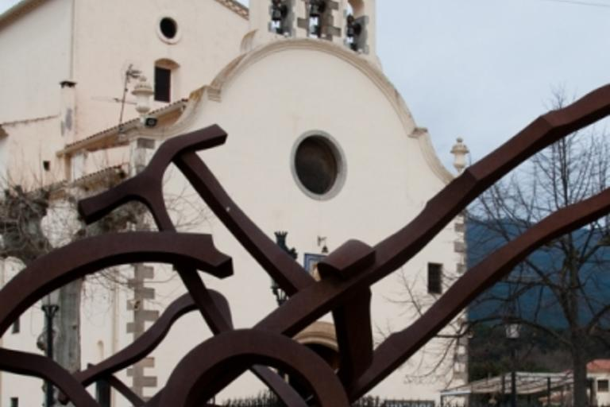

Visita · Palautordera
L’augment de la devoció per la Mare de Déu del Remei va fer necessari construir una nova ermita i es va escollir un terreny al costat de l’antiga capella de Sant Sebastià (edifici d’una sola nau…